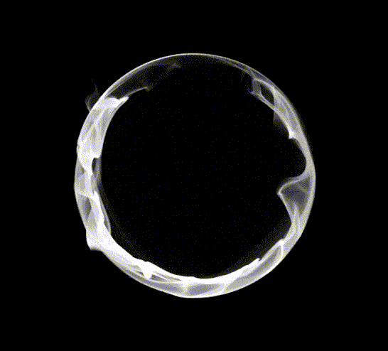
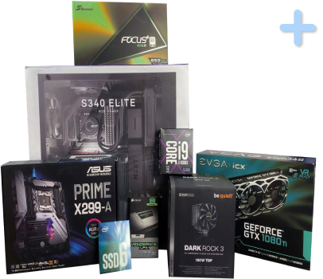
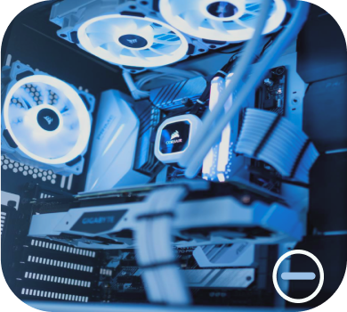

Енергозалежна пам’ять яка під час роботи комп’ютера зберігає програмний код.

На сьогодняшній день найсучасніша оперативна пам’ять форм-фактора DDR5. Саме її потрібно купувати якщо у вас досить велий бюджет на ПК. Виробників оперативної пам’яті є достатньо і при покупці потрібно звератати увагу на такі параметри: частота, об’єм та кількість, інколи на наявність радіатора, якщо ви купуєте високопродуктивну пам’ять. У більшості випадків потріюно брати саме дві планки, тому що в сучасній оперативній пам’яті є така функція як двух канал при якій пам’ять саме в такому режимі швидша ніж в звичайному.
Корпус
Зовнішня оболонка пк, що захищає внутрішні елементи від механічних пошкоджень.
Корпус у більшості випадків є більш декоративним елементом, але без нього, або з гіршими його представниками компоненти комп’ютера можуть перегріватись, через погано продумані місця для забору повітря, та швидшого запиленя комплектуючих через відсутність спеціальних фільтрів.
Перед покупкою корпусу потрібно звератити увагу на такі деталі: тип (розмір) наявність певних розйомів, місця кріплення вентиляторів та їх наявність в комплекті.
Накопичувач
Енергонезалежна пам’ять в якій зберагається вся ваша інформація.
Від типу накопичувача та його об’єму змінюється швидкодія та зручність в повсякденних задачах. На сьогодніший день найшвидшими накопичувачами є SSD з підтримкою Nvme. Їх швидкість може буде до декількох тисяч мегабайт в секунду і об’єм як у звичайних HDD. Але жорсткий диск більш дешевший, але його швидкість близько 7200 обертів в хвилину(близько 150мегабайт в секунду). Ще особливістю HDD є їх шум, але вони не перегріваються так сильно як SSD Nvme, через що в деяких моделях на них є радіатор для охолодження. Золотою серединою є SSD форм-фактора 2.5 вони швидкі порівняно з HDD (500 мб) , не шумлять, не так сильно нагріваються і коштують не так дорого як Nvme.
Процесор
Головний елемент пк, який відповідає за виконання операцій і маніпулюванням з переферійними пристроями.
На даний момент найпопулярнішими процесорами є продукти компаній Intel і AMD. Одним з головних відмінностей є те, що процессори компанії AMD мають велику кількість ніжок, якими він встановлюється в сокет, а в Intel за це відповідають спеціальні контакти. Виходячи з цього процесори від компанії Intel в даному плані більш практичні.
При покупці процесора слід звертати увагу: на кількість ядер та потоків, об’єм кеш-пам’яті, TDP та тактову частоту і можливість її збільшувати. Виходячи з останніх двох пунктів потрібно купувати охолодження для процесора
Блок живлення
Пристрій призначений для перетворення напруги змінного струму від мережі на напругу постійного струму.
Блок живлеення є аналогом кровооносної системи у людини. Він доставляє електроенергію до кожного компонента комп’ютера та стабілізує зовнішню напругу. Саме тому потрібно купувати якісний блок живлення. Перед його покупкую потрібно звертати увагуу на його максимальну потужність та напругу під навантаженням, адже не рідко деякі виробники пишуть максимальну напругу 700 Вт, а під навантаженням може бути близько 500 Вт.
Материнська плата
Плата яка є основую пк, з допомогою якої всі компоненти взаємодіють один з одним.
Майже всі комплектуючі розміщено на материнській платі, саме через це при її покупці потрібно звертати увагу щоб усі компоненти могли встановитись в неї. При покупці системної плати потрібно звертити на увагу на: форм-фактор, сокет, кількість та тип роз'ємів для оперативної плати, наявність певних роз’ємів, кількість фаз живлення для процесора. А точніше на можливість взамодії материнської плати з іншими комплектуючими. Краще взяти трохи більш потужнішу з можливістю подальшої прокачки пк, ніж взяти саму мінімальну, яка вам підходить.
Охолодження CPU
Пристрій для відведення тепла від процесора, що нагрівається в процесі роботи
Деякі не дооцінюють важливості якісного охолодження для процесора, але завдяки ньому CPU не перегрівається та не зменшує частоту щоб якимось чином зменшити нагрів. При якісному охолодження процесора, другий буде автоматичо підвищувати частоту якщо радіатор буде досить якісно відводити тепло від CPU. А для нас це тихіша робота за пк, адже кулер радіатора буде автоматино зменшувати швидкість. При покупці охолодження для CPU потрібно звертати увагу на TDP та підтримку тих чи інших сокетів. Для деяких потужих процесорів потрібно купувати системи водяного охолодження вона більш потужна, тихіша, але коштує дороще чим звичайний кулер і радіатор.
Відеокарта
Пристрій який перетворює певні даніі в зрозуміле звичайній людині зображення.
Відеокарти компаній Nvidia і AMD є найпопулярнішими і найпродуктивнішими. В сьогоденний час відеокарта може коштувати як повноцінний ПК, через високу продуктивність порівняно з іншими комплектуючими комп’ютер, саме через високу потужність на відеокартах добувають криптовалюту і ціни стаю ще вищі. Якщо ви купуюте нову відеокарту сьогодні потрібно зввертати увагу на: кількість відео-пам’яті на відеопроцесор саме цих дві частини відеокарти надудую біьшу частину потужності, але без продвинутої системи охолодження відеокарта буде перегріватись і втрачати свою потужність.
Персональний комп’ютер
Це універсальна система, яка виконує послідовність операцій програми.
При використанні ПК потрібно дотримуватись декількох правил, а саме:
1.Проводити чистку раз в 3-6 місяців, та заміну термопасти раз в декілька років, щоб збільшити час його працездатності. Робити потрібно це кісточками і пилососом, при необхідності зжатим повітрям
2.При можливості використовувати ліцензійні продукти, щоб не наражати комп’ютер на небезпеку.
Плюси та мінуси
збирати ПК самостійно

Купуючи кожну деталь окремо ви
можите заощадити кошти
Можна підбирати кожну деталь одна до одної, щоб комп’ютер підійшов саме вам
Завжди є ймовірність, що ви можете пошкодити одну з комплектуючих
Неможливість покращити, а у деяких випадках навіть очистити ПК, через гарантійний договір

Встановлення процесора
Залежно від виробника – AMD або INTEL – змінюватиметься розташування контактів на процесорі та материнській платі.
Але в обох випадках потрібно підвести затискач вертикально, а у випадку з INTEL їх два. Звірити мітки на процесорі і материнській платі і встановити його в сокет. Після чого затискаємо його.
Встановлення оперативної пам'яті
Плати підтримують двоканальний режим роботи оперативної пам'яті. Щоб його задіяти у випадку коли у вас чотири слоти, потрібно вставляти оперативу память в перший і третій слот. Якщо їх два то без різниці.
В оперативної пам'яті є спеціальна пази, які потрібно поєднати з ключем в слоті материнської плати.
Планки пам'яті фіксуються в слотах за допомогою спеціальних клямок.
Встановлення охолодження CPU
Перед встановленням радіатора СPU потрібно нанести термопасту на процесор.
Підключаємо вентилятор до материнської плати. Для підключення охолодження на материнській платі є спеціальний 4 Pin
роз'єм, у більшость випадків він називається CPU_FAN1 та зноходиться поблизу сокета. Якщо незнаєте де він знаходиться, краще подивитися інструкцію до вашої материнськії плати.
Встановлення материнської плати у корпус
Насамперед встановлюємо комплектну заглушку від материнської плати у виріз на тильній стороні корпусу.
Для кріплення материнської плати в корпусі є спеціальні стійки, а в самій платі отвори, за допомогою яких вона тримається в корпусі.
Залежно від форм-фактора материнської плати розташування стійок може змінюватися. Вам потрібно вкрутити неоьхідні стійки. Після чого покласти материнську плату отворами на стійки і прикрути їх.
Встановлюємо БП та прокладаємо дроти
Встановлюємо БП та прокладаємо дроти
Встановлюємо блок живлення вентилятором вниз та прикручуємо його.
Виводимо кабель живлення материнської плати, зазвичай це найбільший провід.
Прокладаємо кабелі для живлення процесора, жорстких дисків та живлення відеокарти на свої місця у корусі. У більшості випадків розміри кабелів схожі і щоб нічого не сплутати, потрібно дивитися на маркировку на кабелях, там написано що до чого підключати.
Підключення кабелів до материнської плати
Зазвичай кабель живлення CPU це один 4 або 8 Pin але буває і більше.
Роз'єм живлення для CPU часто можна сплутати з роз'ємом для відеокарти, тому перед підключенням потрібно прочитати напис на кабелі. Вставляємо до характерного клацання. Кабель має бути щільно зафіксований. Після чого підключаємо кабель живлення материнської плати. Тут також орієнтуємося на клацання.
Встановлення накопичувачів
Для початку потрібно знайти місце у корпусі для встановлення SSD/HDD накопичувачів.
Наступним кроком буде встановлення їх у те саме місце. Після чого з допомогою кабеля SATA потрібо один кінець
підключити до накопичувача, а інший до материнської плати здебільшого у правій, нижній частині. У інший роз’єм підключити живлення від блоку живлення. А з SSD формату M2 потрібно його тільки прикрутити до спеціального місця на платі.
Підключаємо передню панель корпусу
Головні роз'єми які потрібно підключити це:
Reset Switch (кнопка перезавантаження);Power Switch (кнопка включення);Front Audio Connector(вхід для навушників та мікрофонів).;USB 3.2 Gen 1 Connectors і USB 2.0 Connectors (USB 2.0/USB 3.0).
У більшості випадків всі ці роз'єми розташовані в нижній частині материнської плати. Але найпросший спосіб їх знайти і підключити це подивитись їхнє положення в інструкції саме до вашої материнської плати.
Встановлення відеокарти
Потрібно зільнити місце для роз'ємів відеокарти на задній стінці корпусу. Заглушки виймаємо, кріпляться гвинтами у деяких корпусах просто виламують.
Обережно вставляємо відеокарту кулерами донизу до характерного клацання.
Не забуваємо під’єднати блок живлення